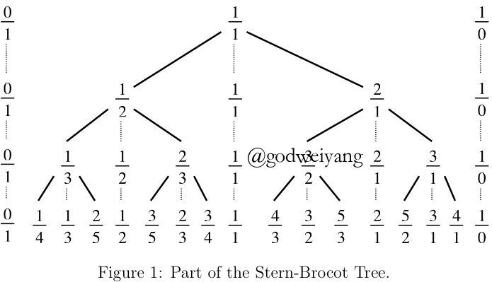

欧几里得数
首先我们来证明一下，素数有无穷多个。
假设素数只有$k$个，分别为$2,3, \ldots ,{P_k}$，那么我们构造下面的数字：
\[M = 2 \cdot 3 \cdot \ldots \cdot {P_k} + 1\]
显然$M$无法被$2,3, \ldots ,{P_k}$中的任意一个整除，那么要么$M$可以被其他的素数整除，要么$M$自己就是一个素数。所以素数有无穷多个。
下面我们来定义欧几里得数，是用递归形式来定义的：
\[{e_n} = {e_0}{e_1}{e_2} \ldots {e_{n - 1}} + 1\]
那么欧几里得数是否是素数呢？当然不是的，${e_5} = 1807 = 13 \cdot 139$。
但是欧几里得数还是有很多奇妙的性质。
性质1
\[\gcd ({e_m},{e_n}) = 1,m \ne n\]
证明：
假设$n > m$，那么有
\[\gcd ({e_m},{e_n}) = \gcd ({e_m},{e_0}{e_1} \ldots {e_m}{e_{m + 1}} \ldots {e_{n - 1}} + 1) = \gcd (1,{e_m}) = 1\]
性质2
如果令$q_j$等于$e_j$的最小素因子，那么${q_1},{q_2}, \ldots $就是一个不重复的素数序列，这也证明了素数有无穷多个。
性质3
\[{e_n} = {e_0}{e_1}{e_2} \ldots {e_{n - 1}} + 1 = ({e_{n - 1}} - 1){e_{n - 1}} + 1 = e_{n - 1}^2 - {e_{n - 1}} + 1\]
在后面的章节可以证明：
\[{e_n} = \left\lfloor { {E^{ {2^n}}} + \frac{1}{2}} \right\rfloor \]
其中$E \approx 1.264$
下面我们稍稍探究一下下面这个数的性质：
\[{2^p} - 1\]
这个数如果是素数，那么就被叫做梅森素数，那么它在什么情况下是素数呢？
首先$p$不能是合数，因为有
\[{2^{km}} - 1 = ({2^m} - 1)({2^{m(k - 1)}} + {2^{m(k - 2)}} + \cdots + 1)\]
但是如果$p$是素数，这个数也不一定是素数，2017年年末美国一个电气工程师发现了人类历史上最大的梅森素数——${2^{77232917}} - 1$。
阶乘
阶乘定义如下：
\[n! = 1 \cdot 2 \cdot \ldots \cdot n = \prod\limits_{k = 1}^n k \]
所以有
\[n{!^2} = (1 \cdot 2 \cdot \ldots \cdot n)(n \cdot \ldots \cdot 2 \cdot 1) = \prod\limits_{k = 1}^n {k(n + 1 - k)} \]
由基本不等式可以得到
\[n \le k(n + 1 - k) \le \frac{ { { {(n + 1)}^2}}}{4}\]
所以
\[\prod\limits_{k = 1}^n n \le n{!^2} \le \prod\limits_{k = 1}^n {\frac{ { { {(n + 1)}^2}}}{4}} \]
所以
\[{n^{n/2}} \le n! \le \frac{ { { {(n + 1)}^n}}}{ { {2^n}}}\]
这里得到了阶乘的一个粗略范围，在后面章节中，我们会得到阶乘的一个更精确的表达式：
\[n! \sim \sqrt {2\pi n} {\left( {\frac{n}{e}} \right)^n}\]
这就是斯特林数，搞ACM还是很有用的。
下面我们来探讨$n!$中含有多少个素因子$p$，个数记为${\varepsilon _p}(n!)$。
从特殊情况讨论起，当$p = 2$的时候，我们首先看$n!$含有多少个2，然后看有多少个4，再看有多少个8，依次下去，所以答案为：
\[{\varepsilon _2}(n!) = \sum\limits_{k \ge 1} {\left\lfloor {\frac{n}{ { {2^k}}}} \right\rfloor } \]
可以看出，这个答案不就是$n$的二进制表示不停右移1位，然后相加吗？所以又可以写成：
\[{\varepsilon _2}(n!) = n - {\nu _2}(n)\]
其中${\nu _2}(n)$表示$n$的二进制表示中1的个数。
推广到一般情况：
\[{\varepsilon _p}(n!) = \sum\limits_{k \ge 1} {\left\lfloor {\frac{n}{ { {p^k}}}} \right\rfloor } \]
放缩一下有：
\[{\varepsilon _p}(n!) = \sum\limits_{k \ge 1} {\left\lfloor {\frac{n}{ { {p^k}}}} \right\rfloor } < \sum\limits_{k \ge 1} {\frac{n}{ { {p^k}}} = \frac{n}{ {p - 1}}} \]
如果我们令$p = 2$和$p = 3$可以发现：
\[{\varepsilon _2}(n!) \approx 2{\varepsilon _3}(n!)\]
但是这个式子在什么情况下相等呢？这仍然是一个未解之谜。
所以$p$对$n!$的贡献度满足如下式子：
\[{p^{ {\varepsilon _p}(n!)}} < {p^{\frac{n}{ {p - 1}}}}\]
又因为$p \le 2^{p - 1}$，所以
\[{p^{ {\varepsilon _p}(n!)}} < {p^{\frac{n}{ {p - 1}}}} \le {2^n}\]
假设素数只有$k$个，分别为$2,3, \ldots ,{P_k}$，那么有
\[n! < {({2^n})^k}\]
如果我们令$n = {2^{2k}}$，那么
\[n! < {({2^n})^k} = {2^{k{2^{2k}}}} = {2^{2k{2^{2k}}/2}} = {n^{n/2}}\]
这与我们之前推过的不等式矛盾！所以一定有无穷个素数。
设小于等于$n$的素数个数为$\pi (n)$，所以
\[n! < {2^{n\pi (n)}}\]
根据斯特林数公式，我们可以得到
\[\pi (n) > \lg (n/e)\]
互素
定义
$m$和$n$互素定义为$gcd(m, n) = 1$，记作$m \bot n$。
互素也有很多性质。
性质1
\[m/\gcd (m,n) \bot n/\gcd (m,n)\]
性质2
\[m \bot n \Leftrightarrow \min ({m_p},{n_p}) = 0\]
其中${m_p},{n_p}$就是两个数的素数指数表示法，详细定义见上一节课。
或者可以表示为
\[m \bot n \Leftrightarrow {m_p}{n_p} = 0\]
性质3
\[k \bot m,k \bot n \Leftrightarrow k \bot mn\]
Stern-Brocot树

如上图所示，Stern-Brocot树就是0到1之间的分数生成的一棵二叉树。
初始时只有$\frac{0}{1},\frac{1}{0}$两个数，第一轮将两者分母相加，分子也相加作为新的分数的分母分子。第二轮再对相邻的两个分数做相同的操作，生成新的分数序列。不断生成下去，得到了上图的二叉树。
Stern-Brocot树有下面四个性质：
- 0到1之间的所有有理数都出现在了这棵树中。
- 每个分数仅出现了1次。
- 每个分数都是不可约分的，即分子分母互素。
- 生成的序列是单调递增的。
下面我们来一个一个证明。
引理
对于相邻的两个分数$\frac{m}{n},\frac{ {m’}}{ {n’}}$，满足：
\[m’n - mn’ = 1\]
证明
用数学归纳法证明。
性质4就是证明：
\[\frac{m}{n} < \frac{ {m + m’}}{ {n + n’}} < \frac{ {m’}}{ {n’}}\]
结论是很显然的，这样性质2同时就成立了。
性质1的话，对于任意有理数$\frac{a}{b}$，假设$\frac{m}{n} < \frac{a}{b} < \frac{ {m’}}{ {n’}}$。
我们采用如下策略生成$\frac{a}{b}$。
- 如果$\frac{ {m + m’}}{ {n + n’}} = \frac{a}{b}$，那么成功。
- 如果$\frac{ {m + m’}}{ {n + n’}} < \frac{a}{b}$，那么令$m = m + m’,n = n + n’$。
- 如果$\frac{ {m + m’}}{ {n + n’}} > \frac{a}{b}$，那么令$m’ = m + m’,n’ = n + n’$。
那么有
\[an - bm \ge 1,bm’ - an’ \ge 1\]
所以
\[(m’ + n’)(an - bm) + (m + n)(bm’ - an’) \ge m’ + n’ + m + n\]
而左边式子就等于$a + b$，所以
\[a + b \ge m’ + n’ + m + n\]
因为$m,n,m’,n’$都在不断增加，所以最多$a + b$轮就能生成$\frac{a}{b}$。
性质3的话，同样用数学归纳法。通过引理可以得到
\[(m + m’)n - m(n + n’) = 1\]
由扩展欧几里得定理可以得到$m + m’$与$n + n’$互素。
Farey序列
我们引申出Farey序列的概念，定义如下：
\[{F_n} = \{ a/b|\gcd (a,b) = 1,0 \le a,b \le n,0 \le a/b \le 1\} \]
关于它的更多性质，留到下一节课继续。